Špičkové zateplení a revitalizace fasád v Olomouci a okolí
Specializujeme se na kontaktní zateplovací systémy ETICS minerální vatou i šedým polystyrenem, komplexní sanace balkonů, historické fasády s materiály KEIM a dotační program Nová zelená úsporám.
Kompletní servis fasádního pláště budov
- Autorizovaný aplikační partner Baumit, KEIM a Profi Baustoffe
- Kompletní dodávka včetně lešení, klempířských prvků a zábradlí
- Vlastní tónovací centrum fasádních barev a omítek v Olomouci
- Sanace vlhkého zdiva dle WTA a ochrana proti graffiti AGS
O nás | SANCO FASÁDY s.r.o.
Společnost SANCO FASÁDY s.r.o. má dlouholetou tradici jako dodavatel špičkových stavebních hmot a certifikovaný realizátor zateplených i nezateplených fasád. Naše firma spolupracuje výhradně s výrobci prověřených stavebních materiálů a samozřejmostí je profesionální technický přístup k jejich aplikaci.
Prodej a certifikovaná realizace fasád na míru
Nabízíme komplexní servis od posouzení stávajícího stavu budovy přes návrh optimální materiálové skladby až po finální aplikaci omítkového souvrství. Díky vlastnímu zázemí a tónovacímu centru v Olomouci Chválkovicích zajišťujeme okamžitou dostupnost materiálů i přesné namíchání požadovaných odstínů.
Naše klíčové oborové kompetence
- Kontaktní zateplení ETICS bytových, panelových a rodinných domů
- Památková obnova fasád minerálními silikáty KEIM a trasem tubag
- Odvlhčování zdiva a aplikace sanačních omítek certifikovaných dle WTA
- Kompletní sanace lodžií, spádových potěrů a nová balkonová zábradlí
Kompletní servis fasád a stavební činnost
Zajišťujeme ucelený balík služeb od prodeje stavební chemie a zateplovacích hmot přes realizaci na klíč až po preventivní ochranu a čištění povrchů.
Zateplování budov ETICS
Kompletní dodávka kontaktních zateplovacích systémů s minerální vatou i šedým polystyrenem. Posouzení tepelného odporu R, výpočet součinitele prostupu tepla U dle ČSN 73 0540 a administrace dotací Nová zelená úsporám.
Prohlédnout technologieSanace balkonů a lodžií
Statické opravy zkorodovaných betonových konstrukcí, reprofilace hran malty třídy R4, celoplošné hydroizolace balkonovými stěrkami quick-mix a montáž hliníkových okapnic.
Systémy sanaceTónování omítek a barev
Vlastní profesionální míchací stanice v Olomouci. Tónování fasádních i interiérových omítek a barev Baumit, Keim, Profi a Colorlak do tisíců odstínů na počkání pro řemeslníky i investory.
Poptat vzorníkKatalog fasádních technologií a realizací
Prozkoumejte certifikované zateplovací skladby ETICS, sanační postupy a vlajkové realizované stavby. Každá karta obsahuje ověřené technické specifikace.
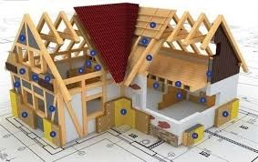
Nehořlavé A1Zateplovací systém ETICS s minerální vatou (MW)
Kontaktní zateplovací systém s deskami z minerální vlny. Zajišťuje maximální požární bezpečnost, akustický útlum a difuzní otevřenost.
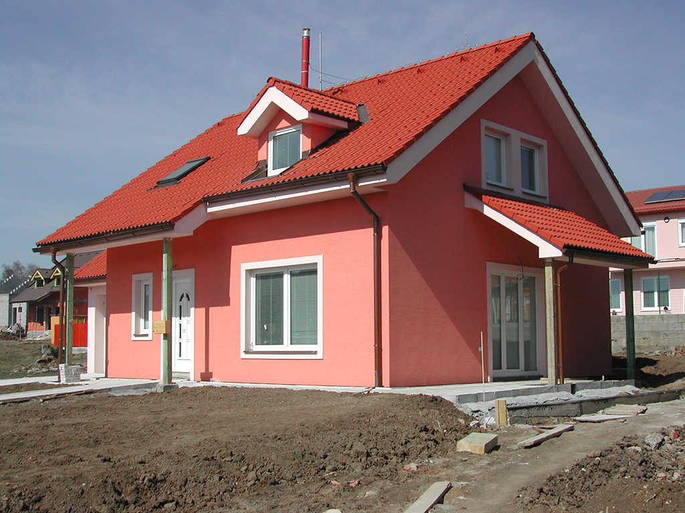
Úspora λ 0.031Zateplovací systém ETICS se šedým polystyrenem EPS
Grafitový expandovaný polystyren Neopor s přísadou uhlíkových nanočástic pro vyšší tepelnou izolaci při menší tloušťce vrstvy.
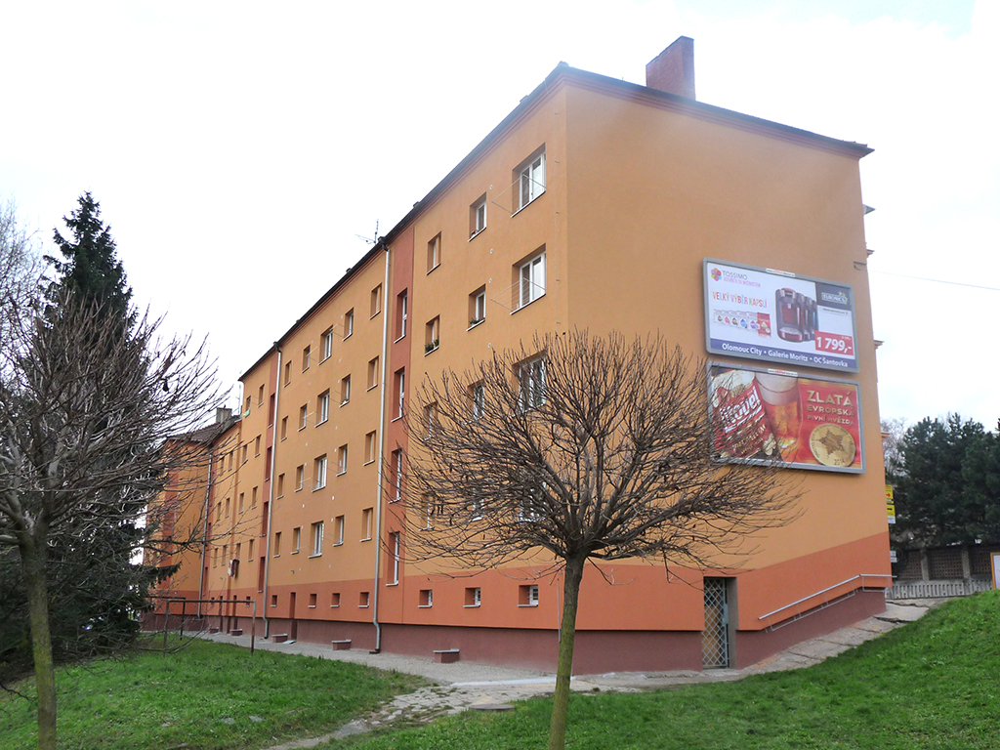
Systém quick-mixKomplexní sanace balkonů, lodžií a teras
Opravy betonových podlah a nosných desek lodžií. Reprofilace betonu, pružná 2K hydroizolace a systémové okapové profily.
Prémiové silikonové a silikátové omítky
Tenkovrstvé fasádní omítky se silikonovým a silikátovým pojivem. Vysoká odolnost proti řasám a fotokatalytický efekt.
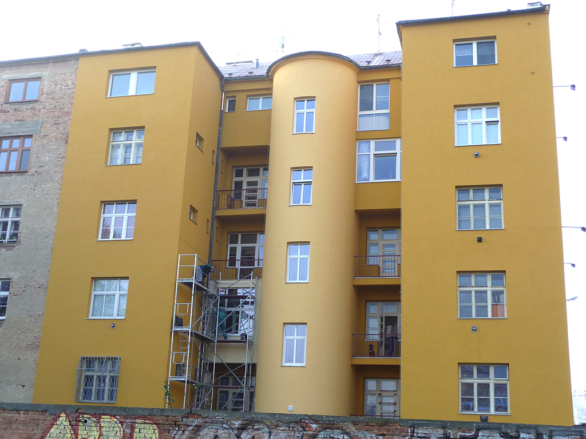
Pevnost 300 kPaZateplení soklů a spodní stavby deskami XPS
Izolace soklové zóny extrudovaným polystyrenem XPS s nulovou nasákavostí a vysokou mechanickou odolností proti proražení.
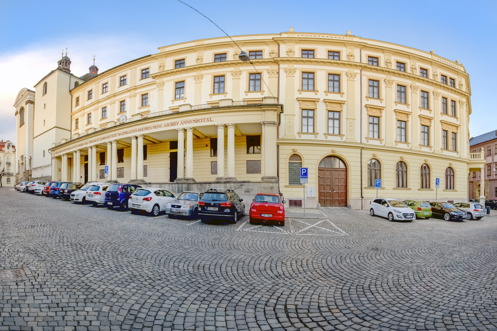
Certifikace WTAOdvlhčovací a sanační omítkový systém WTA
Sanační omítkové souvrství pro zavlhlé zdivo. Umožňuje bezpečné odpaření vlhkosti a ukládání solí uvnitř pórů bez výkvětů.
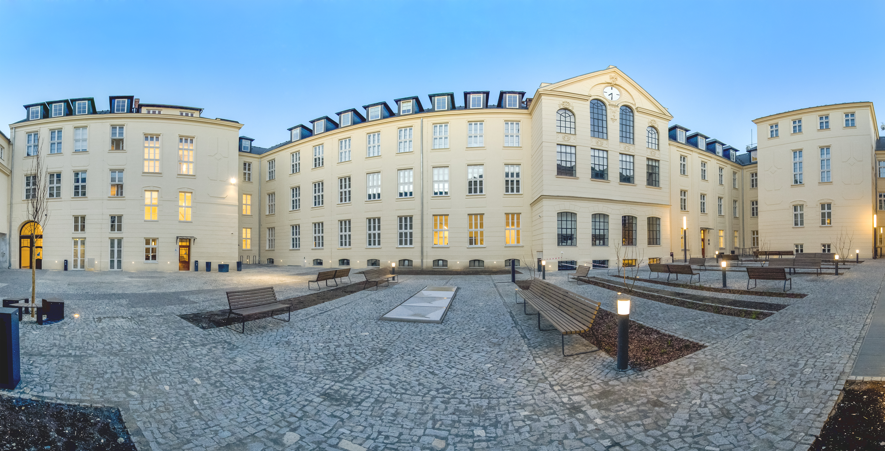
Památková obnovaFilozofická fakulta UP Olomouc, Křížkovského 10
Kompletní sanace zavlhlého zdiva, restaurátorská obnova štuků a nátěr minerálním sol-silikátovým systémem KEIM Soldalit.
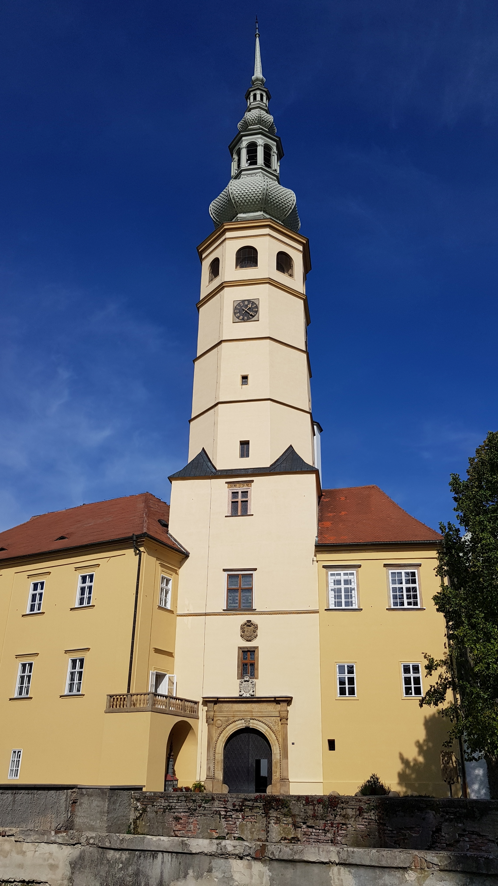
Kulturní památkaZámek Tovačov – obnova zámeckých fasád
Rekonstrukce fasád renesančního zámku s dominující Španělskou věží. Trasové malty tubag a paropropustné vápenné nátěry.
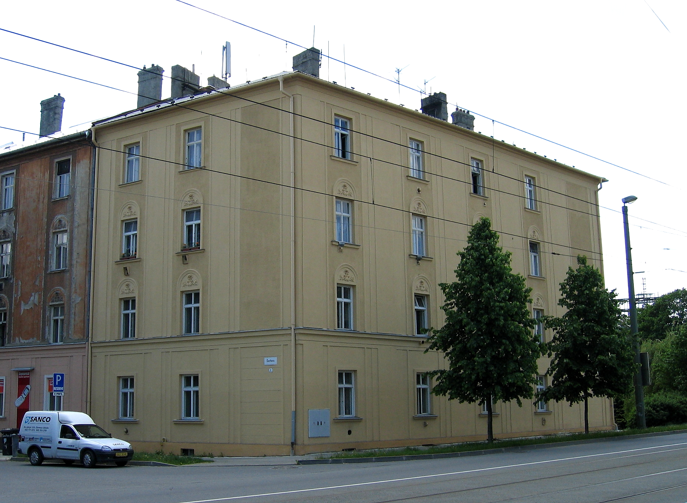
Moderní rezidencePolyfunkční rezidence Šantova, Olomouc
Moderní bytový a komerční komplex v centru města. Vnější zateplovací systém ETICS s minerální vatou 180 mm a silikonovou omítkou.
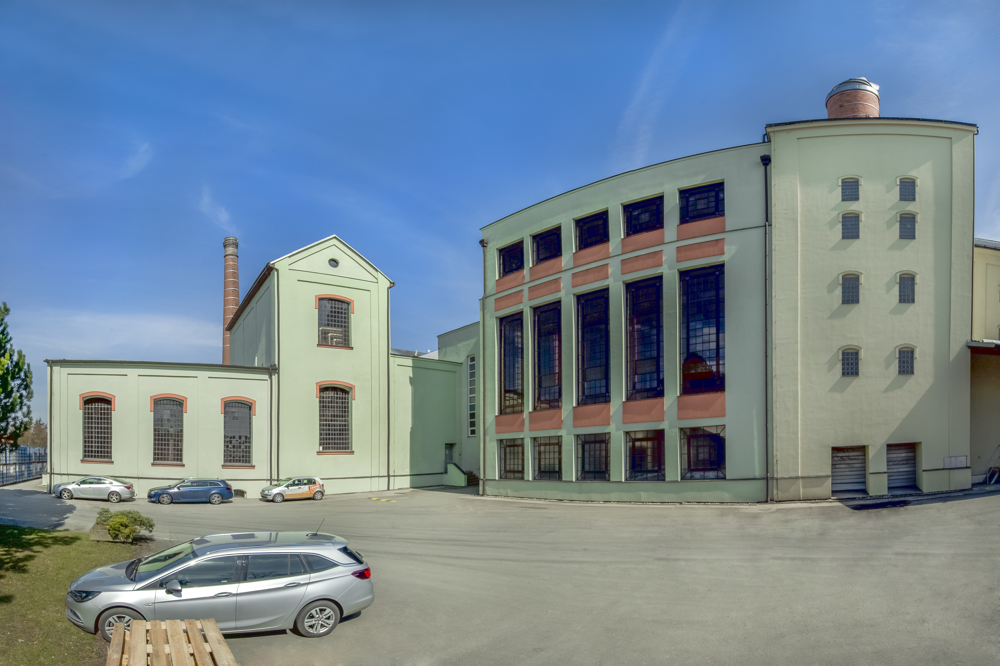
Průmyslový areálPivovar Litovel – administrativní a výrobní areál
Revitalizace fasádních plášťů pivovarských budov. Ochrana před technologickými výpary s paropropustným systémem Profi Baustoffe.
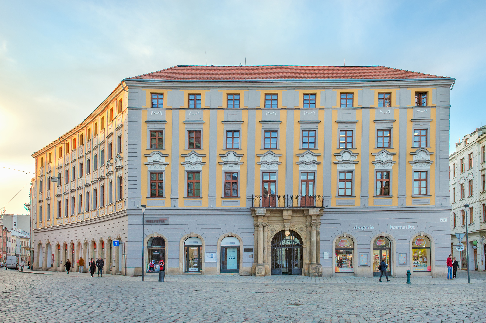
Historické centrumSalmův palác, Horní náměstí 1, Olomouc
Dominantní palácová stavba naproti olomoucké radnici. Restaurátorská obnova fasády čistě minerálními materiály KEIM.
Bytové domy Albertova, Olomouc
Komplexní revitalizace panelových domů. Zateplení fasády EPS Neopor 160 mm, sanace lodžií a dotační servis Nová zelená úsporám.
Kalkulátor tloušťky izolace a úspory tepla
Spočítejte si doporučenou tloušťku fasádního zateplení dle ČSN 73 0540 a odhadněte úsporu tepelných ztrát vašeho objektu.
Výpočet vychází z normy ČSN 73 0540-2 (Tepelná ochrana budov) a dotačních podmínek Nová zelená úsporám. Pro přesný projekt vám rádi zajistíme energetický posudek a PENB.
Reference realizovaných staveb v kraji
Výběr z více než 450 dokončených fasádních revitalizací, historických obnov a zateplení v Olomouci, Prostějově, Přerově a okolí.
Filozofická fakulta UP, Křížkovského 10
Kompletní restaurátorská obnova památkového pláště budovy silikátovým systémem KEIM Soldalit.
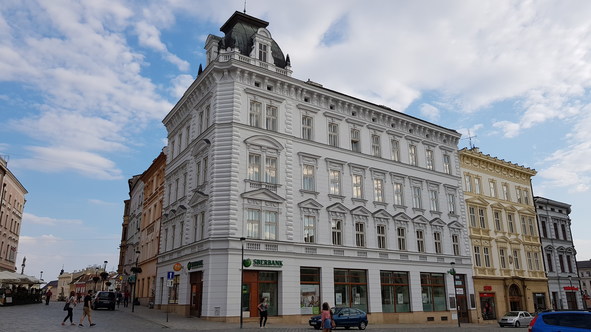
Olomouc centrumMěšťanské domy Horní náměstí
Renovace historických fasád v městské památkové rezervaci pod dohledem památkářů NPÚ.
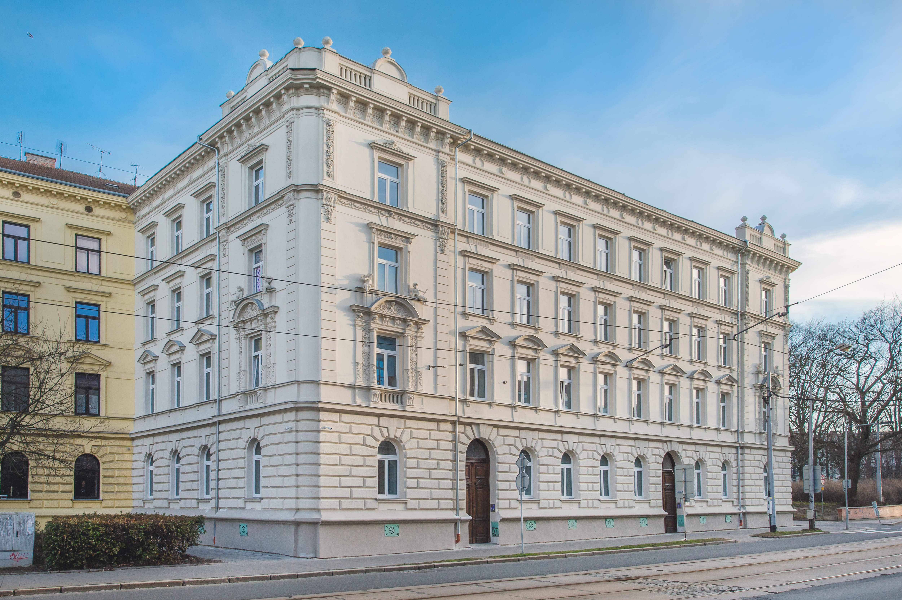
OlomoucBytové domy Palackého 17–23
Oprava uličních fasád, restaurování říms a paropropustné nátěry s anorganickými pigmenty.
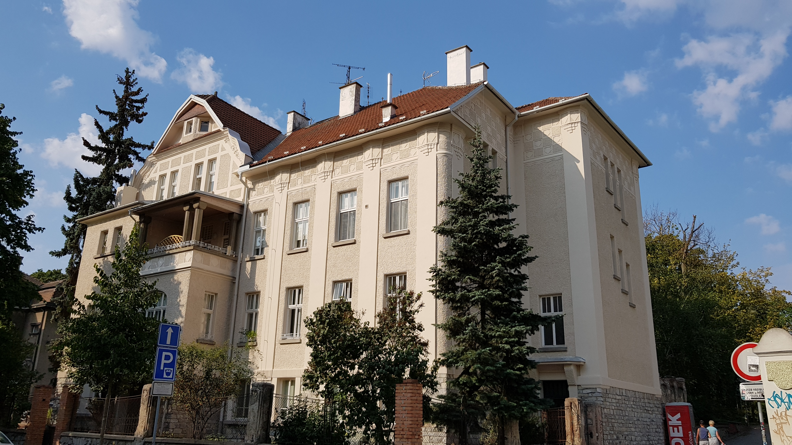
OlomoucVilová zástavba tř. Spojenců
Citlivé zateplení a sanace secesních vilových objektů s důrazem na architektonické detaily.
Renesanční zámek Tovačov
Sanační trasové omítky tubag a minerální fasádní nátěry vápennou technologií KEIM.
Pivovar Litovel areál
Fasádní revitalizace výrobních a administrativních budov paropropustnými omítkami Profi Baustoffe.
Certifikované systémy a autorizace
Používáme výhradně atestované zateplovací a sanační systémy garantované předními evropskými výrobci a českými technickými normami.
Baumit ETICS partner
Certifikovaný aplikační partner kontaktních zateplovacích systémů Baumit s prodlouženou systémovou zárukou.
KEIM autorizace
Autorizovaný partner pro prodej a odbornou aplikaci silikátových fasádních systémů a památkových nátěrů KEIM.
quick-mix a tubag
Certifikace pro aplikaci sanačních omítek WTA a balkónových hydroizolačních systémů se zárukou těsnosti.
Visco technologie
Výhradní obchodní a technické zastoupení inovativních fasádních nátěrů a lepicích hmot Visco v regionu.
Autorizovaný stavitel
Odborné vedení staveb a technický dozor autorizovanou osobou České komory autorizovaných inženýrů a techniků.
Trion Tensid AB
Certifikovaný aplikační servis systémů pro odstraňování graffiti a preventivní permanentní ochranu fasád.
Styroprofile & Styrotrade
Atestované zateplovací profily s armovací tkaninou Vertex a expandovaný polystyren nejvyšší jakosti.
Nová zelená úsporám
Kompletní technická příprava, protokoly měření a podklady pro bezproblémové vyplacení státní dotace NZÚ.
Kontakty a vzorková prodejna Olomouc
Navštivte naši provozovnu v Olomouci Chválkovicích nebo nás kontaktujte pro technickou konzultaci a kalkulaci fasády.
SANCO FASÁDY s.r.o.
Vzorková prodejna stavebnin, tónovací centrum fasádních barev a zázemí realizačního týmu.